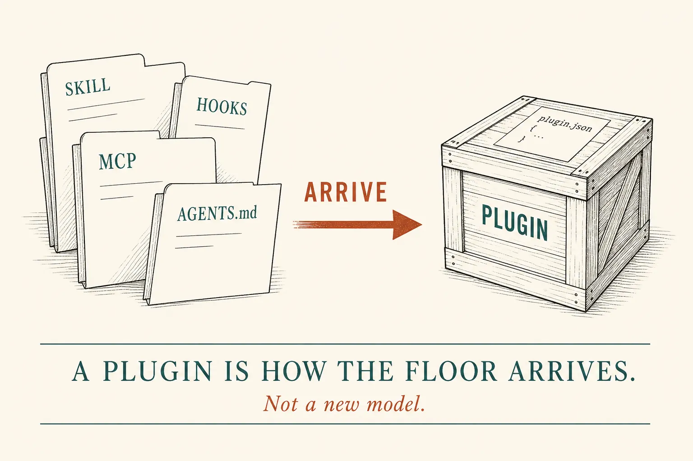
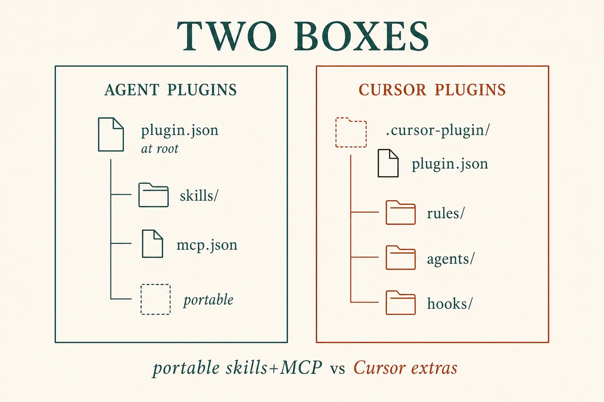
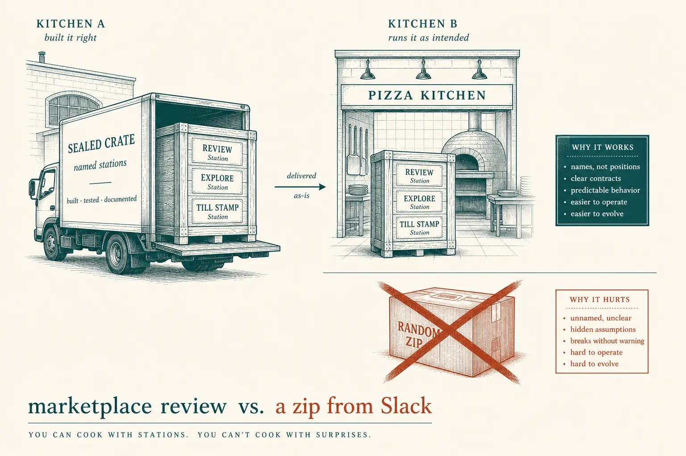

Plugins
The crate is not a model
Lesson 0008 said a plugin store is how a folder arrives. Lesson 0015 put Guide · Guard · Job in git. Tonight is the crate. A plugin packages files you already own so another machine can install them. It is not a new intelligence, and it does not retire hooks or evals.
What this is. Two boxes Cursor actually loads: Agent Plugins (open standard: plugin.json at the root, skills + MCP) and Cursor Plugins (.cursor-plugin/plugin.json, plus rules, agents, commands, hooks, variables). Install from Customize or a marketplace. Cursor · Plugins · Agent Plugins
What this is not. A second model. Re-teaching SKILL.md or hooks. A Slack zip as “governance.” Team SCIM, canvases, publishing checklists — parked. Not a ChatGPT menu named “Plugin.”
- 1 · BundleManifest + the folders. Same skills, MCP, hooks.
- 2 · ArriveInstall: user, project, or team marketplace.
- 3 · TrustReviewed marketplace ≠ a zip. Floor still on.
Escalate on the symptom (0016). If you only needed a Guide, do not crate it.

Architecture first. Distribution, not a new rung on the context/loop/graph ladder.
Two boxes
Agent Plugins is the portable floor: skills (agentskills.io) and MCP servers, one plugin.json with the standard schema. Cursor supports that spec so a conformant crate loads without rearrangement. Cursor Plugins add Cursor-only pieces — rules, custom agents, commands, hooks, variables — under .cursor-plugin/. Same docs · two formats

Lead: crate portable skills+MCP when other clients matter. Crate Cursor extras when the Guard is a hook this editor must run.
Billing floor · as a crate
# Agent Plugin — portable (skills + MCP) billing-floor/ plugin.json # $schema agent-plugins.org skills/refund-policy/SKILL.md mcp.json # Stripe-shaped tools — no secrets # Cursor Plugin — same plus Guard billing-floor/ .cursor-plugin/plugin.json skills/refund-policy/SKILL.md agents/reviewer.md hooks/hooks.json # deny stripe unless policy_ok mcp.json # variables: declare STRIPE_KEY name, not the value # ARRIVE Customize → Install → this project # or ~/.cursor/plugins/local while developing # NOT A PLUGIN Slack: billing-plugin.zip # TRUST: marketplace review is the gate, then still 0014/0015
What this shows. The graph in POST /assistant did not move. The crate is how a hire’s Cursor gets the same Job and Guard. Cursor: do not put secret values in the repo; variables are names, values live in the dashboard.

Kitchen optional. Official marketplace plugins are open source and manually reviewed. A zip in Slack is not that review.
Skill: name the crate
Folder is the floor you already have. Bundle adds a manifest. Arrive is install. Trust is review — then Guard and evals still run.
Same billing team, four looks
Always on after install
Developer
Install at project scope. Confirm skills and hooks actually loaded. You still do not merge your own PR without a stamp.
Team lead
Crate what must be shared. Required marketplace mode only for Guard you cannot opt out of. Do not crate a restated AGENTS.md.
Where this leads
Plugins are the first advanced topic: distribution. Next on the map: production traces, eval suites, agent security — still measure, then add.
Parked: canvases, SCIM group access, publishing to cursor.com/marketplace, Claude Code plugin format as a second crate. MCP install deeplinks wait. The advanced mission does not include training foundation models.
Check
Primary source. Cursor · Plugins (what a crate contains; two formats; install). Manifest and local test: Plugins reference. Portable spec: Agent Plugins. Skills inside the crate: Agent Skills.
Card: plugins. Floor: team floor. Folder: skills. Plug: tools / MCP. Ladder: stack choice.